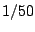

Now we descend to the real situation, in which the period of the waveform cannot be assumed to be arbitrarily long and integer-valued. Suppose (for definiteness) we want to synthesize tones at 440 Hertz (A above middle C), and that we are using a sample rate of 44100 Hertz, so that the period is about 100.25 samples. Theoretically, given a very high sample rate, we would expect the fiftieth partial to have magnitude  compared to the fundamental and a frequency about 20 kHz. If we sample this waveform at the (lower) sample rate of 44100, then partials in excess of this frequency will be aliased, as described in Section 3.1. The relative strength of the folded-over partials will be on the order of -32 decibels--quite audible. If the fundamental frequency is raised further, more and louder partials reach the Nyquist frequency (half the sample rate) and begin to fold over.
Foldover problems are much less pronounced for waveforms with only corners (instead of jumps) because of the faster dropoff of higher partial frequencies; for instance, a symmetric triangle wave at 440 Hertz would get twice the dropoff, or -64 decibels. In general, though, waveforms with discontinuities are a better starting point for subtractive synthesis (the most popular classical technique). In case you were hoping, subtractive filtering can't remove foldover once it is present in an audio signal.